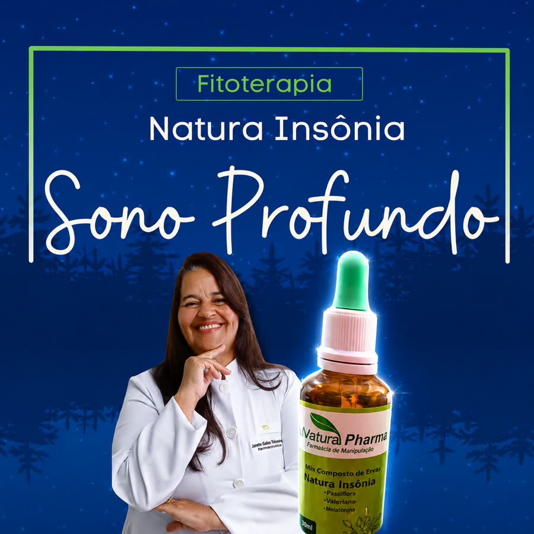
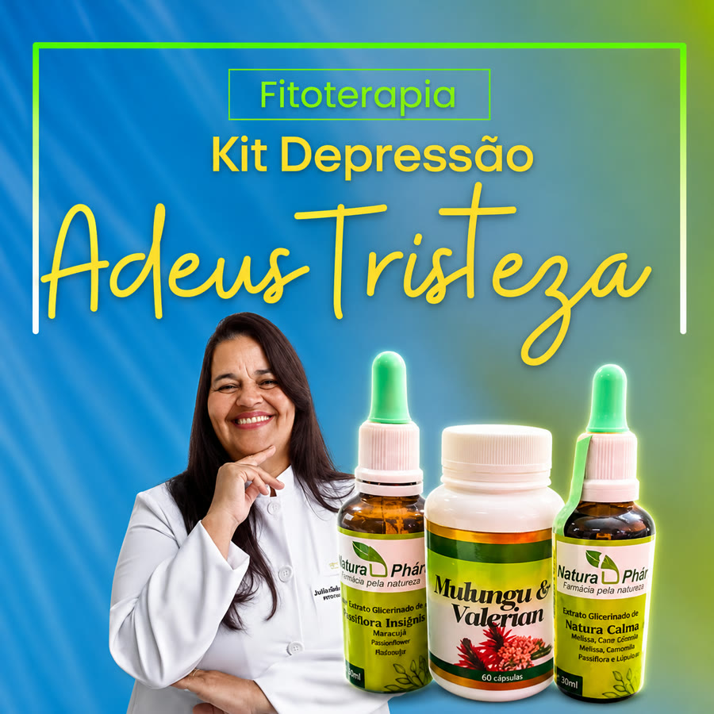
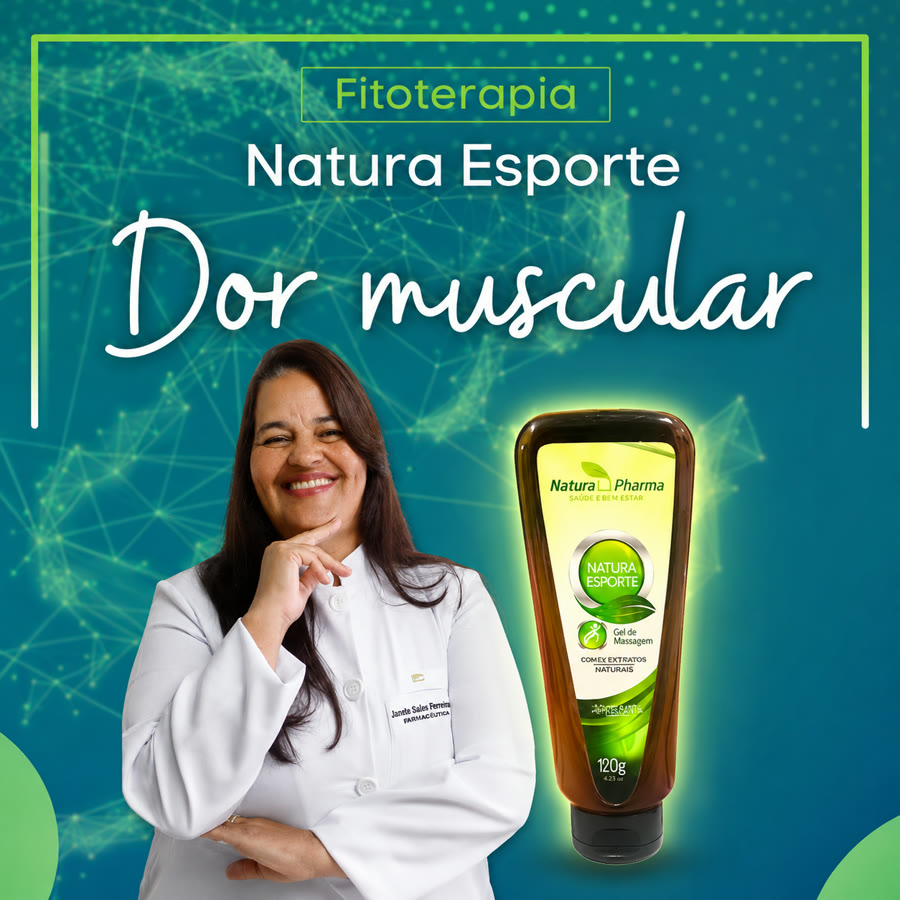
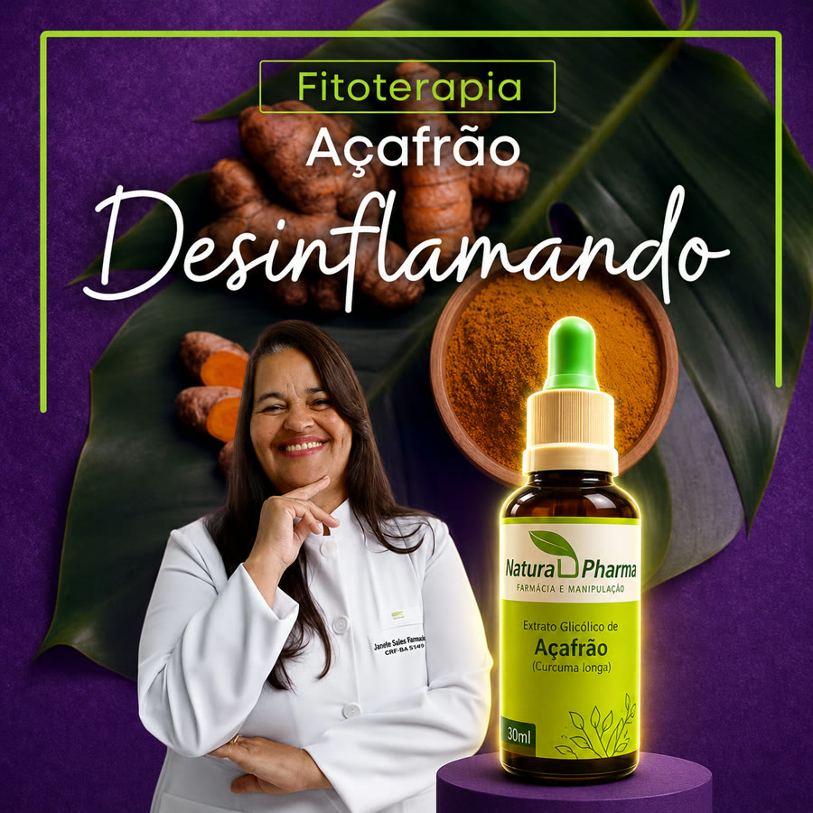
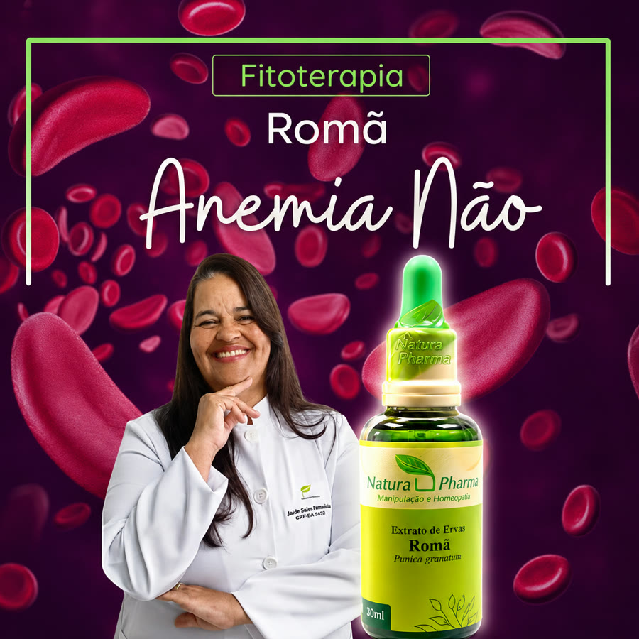

Terapia Holística
Atendimento voltado ao equilíbrio emocional, mental, físico e espiritual, buscando compreender a raiz dos desequilíbrios.
Sou Sandra Dalva, terapeuta holística e fitoterapeuta. Atuo com tratamentos naturais, personalizados e menos invasivos, olhando para você como um todo.
Sandra Dalva é terapeuta holística e fitoterapeuta, especializada em fitoterapia pelo IBRATH, com registro RQH-S-56673-ES e cursos complementares em psicologia. Seu atendimento é baseado no cuidado integral, considerando os aspectos físicos, emocionais, mentais e espirituais de cada pessoa.
Os tratamentos são personalizados de acordo com a necessidade de cada pessoa, buscando mais equilíbrio, qualidade de vida e bem-estar.
Atendimento voltado ao equilíbrio emocional, mental, físico e espiritual, buscando compreender a raiz dos desequilíbrios.
Uso orientado de recursos naturais e plantas medicinais como apoio ao bem-estar e à saúde integral.
Cada pessoa é única. Por isso, o atendimento considera sua história, rotina, sintomas, emoções e objetivos.
Produtos naturais em cápsulas, desenvolvidos para auxiliar em diferentes necessidades de cuidado e equilíbrio.
Além das consultas, também trabalho com encapsulados fitoterápicos, pensados para auxiliar no cuidado natural e complementar.

Mix composto de ervas com passiflora, valeriana e melatonina, formulado para apoiar o relaxamento e favorecer noites de sono mais tranquilas.
Consultar disponibilidade
Combinação de extratos de passiflora, mulungu, valeriana, melissa, camomila e lúpulo — plantas tradicionalmente associadas ao apoio emocional e à sensação de calma.
Consultar disponibilidade
Gel de massagem com extratos naturais e ação refrescante, para apoiar o conforto muscular após esforço físico e atividades do dia a dia.
Consultar disponibilidade
Extrato glicólico de açafrão, planta tradicionalmente associada ao apoio antioxidante e ao equilíbrio do organismo.
Consultar disponibilidade
Extrato de romã (Punica granatum), utilizado como apoio nutricional complementar à disposição e ao bem-estar geral.
Consultar disponibilidadeProdutos comercializados em parceria com farmácia de manipulação. Devem ser utilizados com orientação adequada — resultados podem variar de pessoa para pessoa e não substituem acompanhamento médico.
“Me senti acolhida desde o primeiro atendimento.”
“O acompanhamento me ajudou a cuidar melhor da minha rotina e emoções.”
“Atendimento humano, cuidadoso e muito profissional.”
Agende sua consulta e descubra um caminho mais natural, acolhedor e personalizado para cuidar de você.
Falar com Sandra no WhatsAppA terapia holística é uma abordagem que considera o ser humano em sua totalidade — corpo, mente, emoções e espírito — buscando equilíbrio e bem-estar de forma integrada, sempre como cuidado complementar à saúde.
A fitoterapia é o uso orientado de plantas medicinais e recursos naturais como apoio ao bem-estar, sempre indicada de forma personalizada e responsável.
As consultas podem ser realizadas de forma online ou presencial, conforme sua disponibilidade e necessidade. Fale com a Sandra pelo WhatsApp para verificar as opções disponíveis.
Não. Os tratamentos naturais e a terapia holística são abordagens complementares e não substituem diagnóstico, tratamento ou acompanhamento médico quando necessário.
Entre em contato pelo WhatsApp para verificar disponibilidade, indicações de uso e orientação adequada antes da compra.
Basta clicar em qualquer botão do WhatsApp neste site ou chamar diretamente no número (27) 99776-4443 para iniciar seu atendimento.
Atendimento online e presencial · endereço do consultório em breve